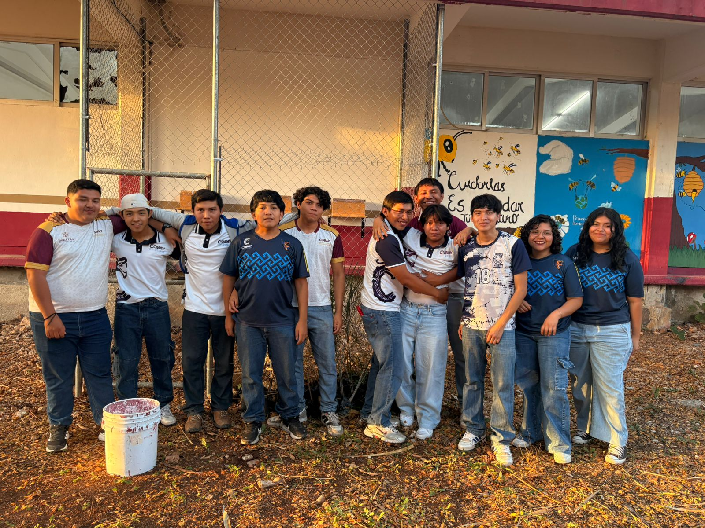
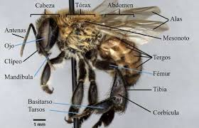

melipona
La Abeja melipona es una especie de abeja nativa de regiones tropicales como Yucatán. Se caracteriza por no tener aguijón y por producir una miel muy valorada.
Desde la época de los mayas, estas abejas han sido cuidadas en meliponarios, ya que su miel era utilizada como alimento y medicina natural.

fisiologia
- Su cuerpo se divide en cabeza, tórax y abdomen.
- Posee antenas para percibir olores y comunicarse.
- Tiene ojos compuestos que le ayudan a orientarse
- No tiene aguijón, por lo que es inofensiva.

alimentacion
- Se habre la caja.
- se saca el traste donde va la miel.
- se rellena el traste de miel.
- se cierra la caja.